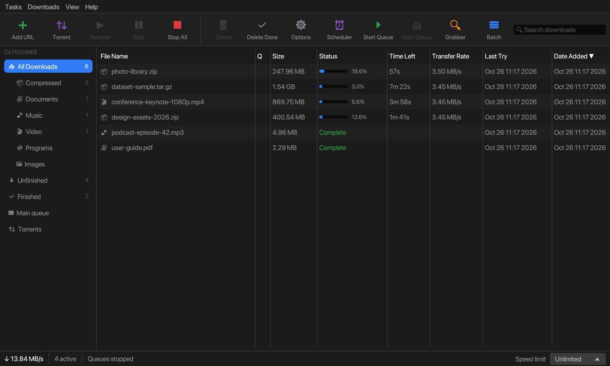
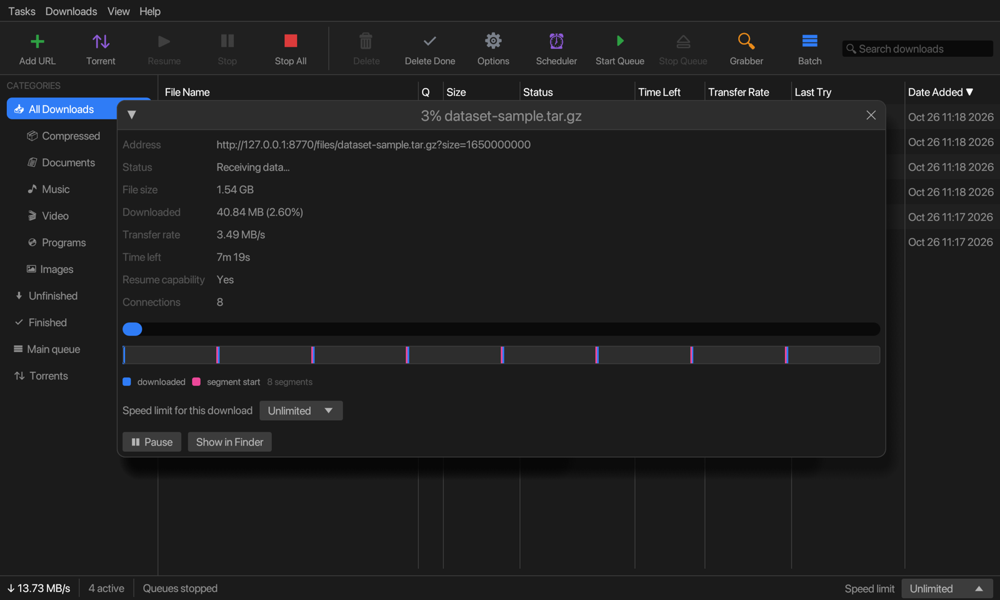

Downloads that use every connection you've got.
ADM splits each file across up to 32 connections, keeps splitting as parts finish, and picks up where it left off after a crash, a reboot or a dropped Wi-Fi. For Windows, macOS and Linux.

Everything a download manager should do
The parts you'd expect from a serious downloader, built as one fast native app in Rust.
Dynamic segmentation
Files are split across many connections. When one part finishes, its connection takes half of the largest part still running, so every connection stays busy until the end.
Resume that survives crashes
Progress is checkpointed safely to disk. Pause, quit, lose power or change networks, and the download continues from where it stopped. Expired links can be refreshed without starting over.
Browser integration
The extension hands downloads from Chrome, Edge, Brave and Firefox to ADM, and offers a “Download video” button on pages with video.
Video and stream downloads
Saves HLS and DASH streams as a single MP4 (with ffmpeg), letting you pick the quality. Protected (DRM) and encrypted streams are left alone.
BitTorrent built in
Magnet links and .torrent files, with file selection, DHT, UPnP, seeding controls and upload limits, in the same list as everything else.
Site grabber
Collect every image, video, document or archive from a site, or mirror it for offline reading, with depth, size and robots.txt rules. Save projects and run them on a schedule.
Scheduler and queues
Several queues, each with its own start and stop times, days, simultaneous file limit and retries. When a queue finishes, ADM can quit, sleep or shut down the computer.
Speed limits and quotas
A global limit, a per-download limit, fewer connections for picky servers, and a download quota per time window for metered connections.
Clipboard, batch and drag & drop
Copy a link and ADM offers it. Paste a page of links, generate numbered sequences like img001…img250, or drop links and files onto the window.
Categories
Compressed, documents, music, video, programs and images each get their own folder automatically, or add your own categories by file type and site.
Logins, proxies and safety
Saved site logins, HTTP and SOCKS proxies, a virus scan after each download, and the operating system's “downloaded from the internet” marks on every file.
Command line
Add downloads from scripts with adm --add URL --dir PATH --silent. If ADM is already open, the command goes to the running window.
A familiar layout, without the clutter
A classic download-manager window: big toolbar, categories on the left, everything about each download one click away. It follows your system's light or dark mode.

Catch downloads and videos straight from the browser
- Chrome
- Edge
- Brave
- Other Chromium browsers
- Firefox 128+
- Clicked downloads of the file types you choose go to ADM. If ADM isn't running, the browser keeps the download, so nothing is lost.
- Videos and streams playing on a page are listed in the toolbar popup, and a Download video button appears over the player.
- Right-click Download with ADM, or Download all links with ADM to pick files from a whole page.
- Magnet links open in ADM's torrent dialog.
- YouTube isn't supported, and DRM-protected or encrypted streams are never downloaded.
127.0.0.1). It sends nothing anywhere else. See the privacy policy.Install it
Store listings are on the way. Until then, ADM ships the extension in its own folder:
- In ADM, open Options → Browser and click Show extension folder.
- Open
chrome://extensions(oredge://,brave://…) and switch on Developer mode. - Click Load unpacked and choose the
extensionfolder. - Pin ADM to the toolbar. The popup shows whether it's connected to the app.
Firefox: open about:debugging → This Firefox → Load Temporary Add-on, pick manifest.json, then paste the pairing token from ADM into the add-on's preferences.
Get ADM
The latest release for each system. The browser extension is included in every download.
Linux
x86-64 and ARM64, with an install script for the menu and file associations.
Looking for older versions? See all releases. On macOS, if the first launch is blocked, open System Settings → Privacy & Security and click Open Anyway.
Questions
Why are downloads faster with ADM?
Many servers limit how fast a single connection can go. ADM opens several connections to the same file, each fetching a different part, and keeps re-dividing the remaining work so no connection sits idle. It only helps when the server allows partial downloads, which most do; ADM shows whether a file can be resumed before it starts.
Can it download any video on any site?
It downloads videos and HLS or DASH streams that a site plays openly. It won't touch DRM-protected or encrypted streams, and it doesn't support YouTube. Please only download what you have the right to.
What happens if my computer restarts in the middle of a download?
ADM saves its progress safely as it goes. Open it again and press Resume: it checks that the file on the server hasn't changed, then continues from the saved position. If the link has expired, paste a fresh one in the download's properties and it carries on.
Does ADM collect any data?
No. There's no account, no analytics and no tracking. If “Check for updates” is on, ADM asks GitHub once a week whether a newer release exists. The browser extension only talks to ADM on your own computer.
Which languages are available?
English, Spanish, French, German and Simplified Chinese. ADM follows your system language, or you can choose one in Options → General.
Can I add downloads from scripts?
Yes: adm --add URL [--dir PATH] [--name FILE] [--silent] [--later], and adm --start-queue. Run adm --help for everything.